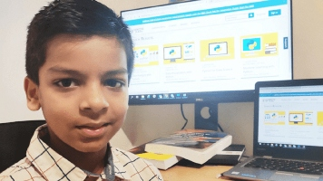
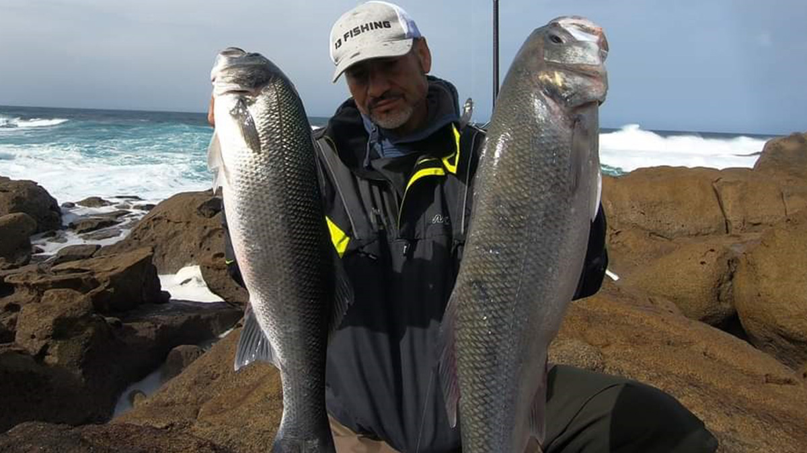

Web Carlos y Jose
Home
Quienes Somos
Nuestros CV
Contact

Carlos del Blanco
Soñando co la programación des de pequeño
Experiencia
Actualmente Mr.Quitanieves
Cinco años como jardinero pokemon
Tres años como pro el FIFA 98
Formación
Master del Universo
Estudios primarios en el IES Joan Miró

Jose Ramos
Emprendedor. Has el infinito y más allá
Experiencia
Actualmente vigilante jurado de la escalera de vecions
Dos años como pescador de cangrejo real en Alaska
Tres años como profesor de Alemán
Formación
Grado en cositas buenas
Estudios primarios en el IES Joan Miró